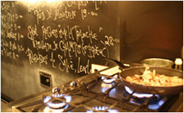
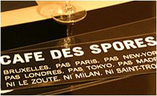

|
 |  |
Au café des spores nous avons choisi de privilégier le frais et le fait maison. Notre offre évolue par conséquent en permanence au gré du marché et des arrivages.
Nous sommes également attentifs à proposer des alternatives pouvant convenir aux végétariens ainsi qu'aux personnes souffrant d'allergies.
Le principe est que l'on retrouve des champignons dans chaque plat, et ce de l'entrée jusqu'au dessert! Notre menu-carte est structuré de la manière suivante:
D’office :
Pane carasau, ricotta, pickles de mousserons
Entrée :
Girolles, gnocchi, bouillon
ou
Morilles, œuf mollet, asperges
Plat :
Eirengi, maquereau, daikon
ou
Shiitake, tajine d’agneau, couscous
Fromage:
Fromage du jour, pruneaux au thé fumé
Dessert :
White fungus, ananas, fraise
ou
Millefeuille aux cèpes
...
2 services: 25€
3 services: 30€
4 services: 35€
PS: Notre pain est fait par nous, de A à Z , avec des farines certifiées Bio.
C'est un pain au levain 100% naturel qu il est également possible d acheter à la pièce ou à la demi pièce (mais il est plus prudent de le precommander au 02 544 14 22).